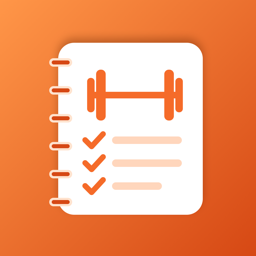

Trainingsbuch
Dein Trainingstagebuch fürs Fitnessstudio
Kontakt
Fragen, Probleme oder Ideen? Schreib mir gern eine E-Mail an curlyrob@gmail.com. Ich antworte in der Regel innerhalb weniger Tage.
Hilfreich ist es, wenn du dein iPhone-Modell, die iOS-Version und eine kurze Beschreibung mitschickst.
Was kann die App?
- Trainings mit Übungen, Gewicht und Wiederholungen eintragen – die Sätze vom letzten Mal sind schon vorausgefüllt.
- Vorlagen wie „Push“, „Pull“ oder „Beine“ speichern und mit einem Tipp starten.
- Sätze abhaken und automatisch einen Pausentimer starten, der sich auch im Hintergrund meldet.
- Neue Rekorde beim Training erkennen – mit Pokal und kleiner Feier.
- Fortschritt je Übung als Diagramm sowie eine Statistik mit Wochenverlauf, Serien und Sätzen je Muskelgruppe.
Häufige Fragen
Der Pausentimer meldet sich nicht, wenn die App im Hintergrund ist.
Dafür braucht die App die Erlaubnis für Mitteilungen. Prüfe in den Einstellungen › Mitteilungen › Trainingsbuch, ob Mitteilungen erlaubt sind. Ist ein Fokus wie „Nicht stören“ aktiv, kann die Mitteilung auch dadurch stummgeschaltet sein.
Wie entsteht ein „neuer Rekord“?
Ein Satz zählt als Rekord, wenn du bei einer Übung mehr Gewicht schaffst als je zuvor oder wenn das daraus geschätzte Maximalgewicht für eine Wiederholung (1RM, berechnet nach Epley) höher ist als bisher. Beim allerersten Training einer Übung gibt es noch nichts zu schlagen – Rekorde zählen also ab dem zweiten Mal.
Wie lege ich eine Vorlage an?
Tippe in der Trainingsliste oben links auf das Klemmbrett-Symbol und dann auf „+“. Oder du sicherst ein fertiges Training über das Menü „⋯“ mit „Als Vorlage sichern“. Gewichte und Wiederholungen werden beim Start immer vom letzten Training übernommen.
Kann ich Kommazahlen eingeben?
Ja, zum Beispiel 62,5 kg. Komma und Punkt funktionieren beide.
Wo werden meine Trainings gespeichert?
Ausschließlich auf deinem iPhone. Es gibt kein Konto und keinen Server. Deine Daten sind in deinem normalen iPhone-Backup (iCloud oder Computer) enthalten.
Wie lösche ich Daten?
Trainings, Übungen, Sätze und Vorlagen löschst du per Wischen nach links. Wenn du die App löschst, werden alle Daten entfernt.